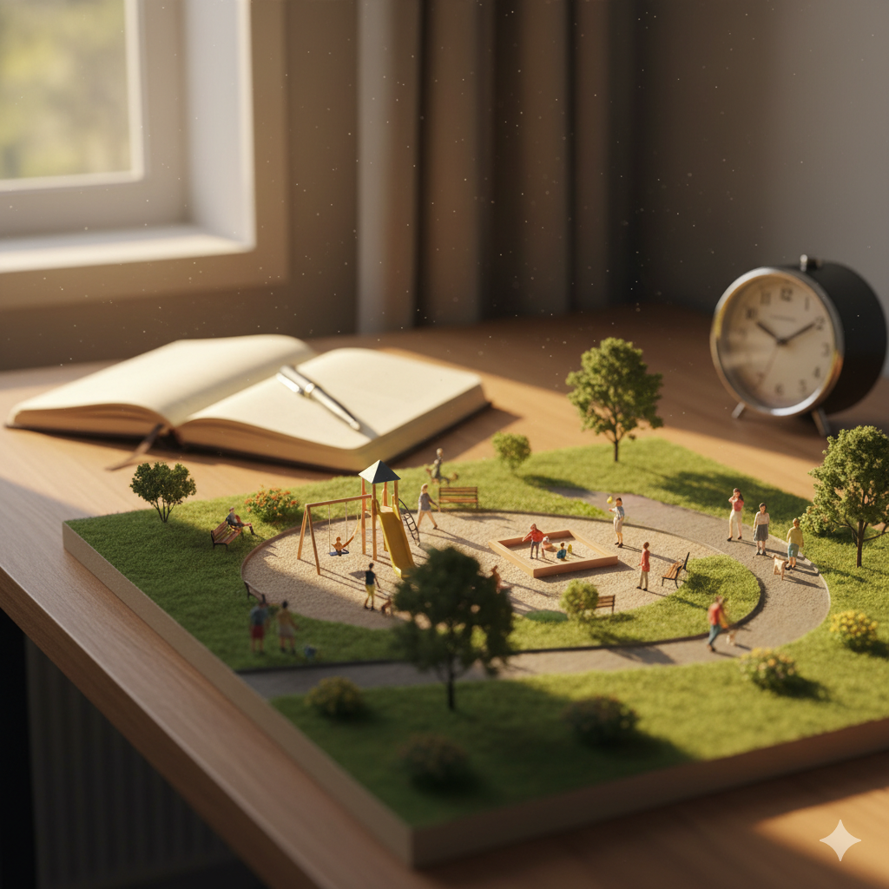
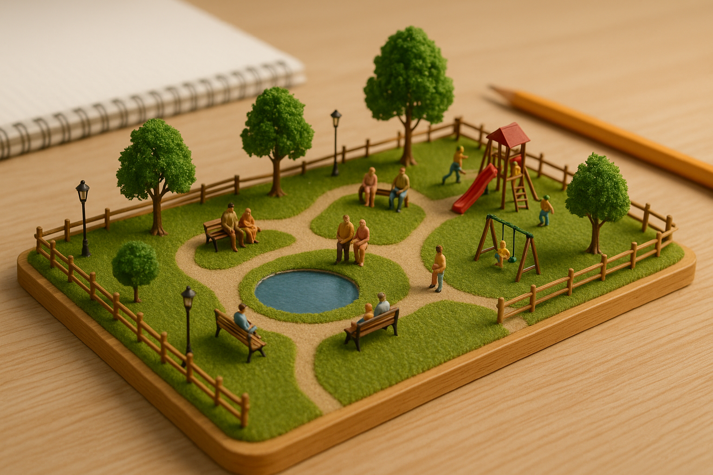

실제 설문에서는 참여자가 세 화면 중 하나만 보게 됩니다. 이 페이지는 연구자가
대조군 / 가이드 A / 가이드 B 구성을 한 번에 확인하는 용도입니다.
📋 설문 안내
(이 문단은 세 그룹 공통 안내로 사용할 수 있어요. 필요하면 Google Form의 첫 설명에도 같이 넣으면 됩니다.)
안녕하세요! AI 융합교육학을 연구하고 있는 대학원생 장윤희입니다.
바쁘신 와중에 귀한 시간을 내어 연구에 참여해주셔서 진심으로 감사합니다.
본 연구는 생성형 AI를 사용할 때 여러분의 프롬프트 작성 능력과 AI 활용 능력이
어떻게 향상되는지 알아보기 위한 것입니다. 모든 응답은 익명으로 처리되며,
연구 목적 이외에는 사용되지 않습니다.
📌 설문 진행 순서 (약 18–20분)
1단계 (5분) : 기본 정보 + 현재 AI 활용 능력 측정
2단계 (1분) : 목표 이미지 확인
3단계 (7분) : AI 이미지 만들기 실습
4단계 (7분) : 향상된 능력 재측정 + 과제 평가
💡 용어 설명 – “프롬프트”
프롬프트란, AI에게 원하는 것을 요청할 때 입력하는 명령어나 질문을 말합니다.
예) 강아지가 공원에서 노는 사진을 만들어줘
📸 목표 이미지 예시 – “책상 위에 펼쳐진 작은 미니어처 공원”
똑같이 만들 필요는 없고, 비슷한 느낌이면 충분하다는 안내와 함께 보여주면 됩니다.


🧪 실험 화면 미리보기
1) 목표 이미지 안내
별도의 프롬프트 가이드는 없이, 목표만 설명하고 바로 실습으로 넘어가는 버전입니다.
2) 프롬프트 작성 · 실습
참여자는 평소처럼 AI 도구를 쓴다고 생각하고, 자유롭게 문장을 작성합니다.
※ 지금은 연습용이라 실제 이미지를 만들지 않고, 나중에 OpenAI / Midjourney 등과 연결할 수 있습니다.
1) 초보자용 프롬프트 예시
“느낌 → 대상 → 안에 들어갈 것들 → 배경 → 품질” 순서로 한 번에 볼 수 있는 예시입니다.
미니어처 스타일로,
위에서 내려다본 각도의 책상 위 작은 공원을 만들어줘.
공원에는 작은 벤치, 미니 가로등, 나무와 꽃들,
산책하는 사람들, 뛰어노는 아이들, 작은 분수대가 있고,
배경에는 커피잔과 노트북이 흐릿하게 보이게 해줘.
밝은 아침 햇살 아래, 매우 상세하게, 4K 고화질로 표현해줘.
첫 줄: 전체 느낌(미니어처, 시점)
중간: 공원 안에 무엇이 있는지 나열
마지막: 빛, 분위기, 해상도
2) 프롬프트 작성 · 실습
위 예시를 참고해서, 본인이 원하는 버전으로 문장을 바꿔보게 합니다.
※ 버튼 아래에 “실행 전/후 이미지 비교”를 붙이면, 가이드 효과를 바로 보여줄 수 있습니다.
1) 전문가용 프롬프트 예시
구도·요소·디테일을 세밀하게 조절하는 예시입니다. PECS 요소(간결성·논리성 등) 설명을 곁들여도 좋아요.
미니어처 디오라마 사진 스타일로,
45도 각도에서 내려다본 책상 위의 작은 공원을 생성해줘.
공원에는 미니 벤치, 작은 가로등, 나무와 화단, 작은 분수,
놀이터, 연못, 산책하는 사람과 뛰어노는 아이들이 등장하고,
배경에는 흐릿한 커피잔, 연필꽂이, 노트북이 배치되어 있게 해줘.
밝은 아침 햇살 아래, 매우 상세하고 사실적인 4K 고해상도로 표현하며,
미니어처의 스케일감과 깊이감을 특히 강조해줘.
1블록: 스타일 + 시점 고정
2블록: 장면 구성 요소와 사람의 행동
3블록: 빛, 해상도, 강조 포인트(스케일감, 깊이감)
2) 프롬프트 작성 · 실습
전문가들은 이미 AI를 쓰고 있으므로, 스스로 구조를 조정하게 하는 입력창입니다.
※ 실제 연구에서는 이 영역의 텍스트를 그대로 복사해 Google Form의 “프롬프트 입력 문항”에 붙여 넣어도 됩니다.
📝 실제 설문 응답 영역 (Google Form)
구글폼에서 “보내기 → <> 임베드”를 눌러 iframe 코드를 복사한 뒤,
아래 iframe 부분을 통째로 교체하면 됩니다.
🔐 API 키 관련 중요 메모
GitHub Public 저장소에 절대로 실제 API 키를 넣으면 안 됩니다.
브라우저에서 직접 호출하는 자바스크립트 코드 안에도 API 키를 적어두면 누구나 볼 수 있습니다.
나중에 OpenAI 이미지 API를 쓰고 싶다면, 별도의 서버(또는 서버리스 함수)를 하나 두고
그 서버에만 키를 보관한 뒤, HTML 페이지에서는 그 서버로만 요청을 보내는 방식으로 해야 안전합니다.
이번 설계처럼 Google Form + 참가자가 직접 본인 ChatGPT를 사용하는 방식이면
API 키를 전혀 쓰지 않으므로, 저장소를 Public으로 두어도 괜찮습니다.